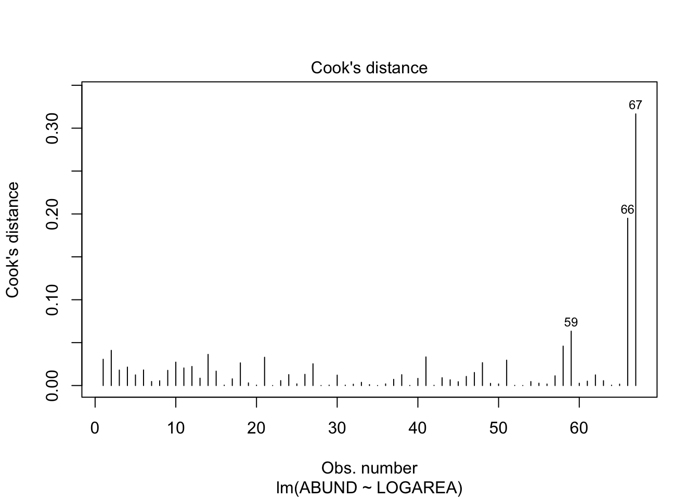
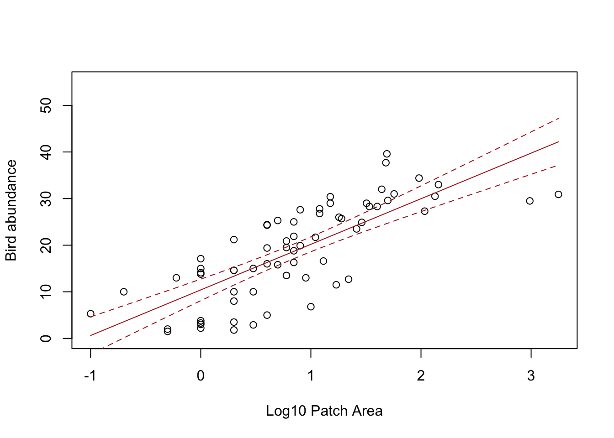
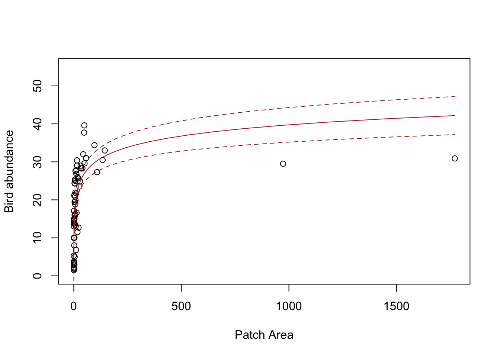

Exercise Solutions
Exercise: Linear model with single continuous explanatory variable
- Either create a new R script (perhaps call it linear_model_1) or continue with your previous data exploration R script in your RStudio Project. Again, make sure you include any metadata you feel is appropriate (title, description of task, date of creation etc) and don’t forget to comment out your metadata with a
#at the beginning of the line.
- Import the data file ‘loyn.txt’ into R and take a look at the summary of the graphical data exploration you performed during the previous exercise. The aim of this exercise is to get familiar with fitting a simple linear model with a continuous response variable, bird abundance (
ABUND) and a single continuous explanatory variable forest area (AREA) in R. Ignore the other explanatory variables for now.
loyn <- read.table("./data/loyn.txt", header = TRUE,
stringsAsFactors = TRUE)
str(loyn)
## 'data.frame': 56 obs. of 8 variables:
## $ Site : int 1 2 3 4 5 6 7 8 9 10 ...
## $ ABUND : num 5.3 2 1.5 17.1 13.8 14.1 3.8 2.2 3.3 3 ...
## $ AREA : num 0.1 0.5 0.5 1 1 1 1 1 1 1 ...
## $ DIST : int 39 234 104 66 246 234 467 284 156 311 ...
## $ LDIST : int 39 234 311 66 246 285 467 1829 156 571 ...
## $ YR.ISOL: int 1968 1920 1900 1966 1918 1965 1955 1920 1965 1900 ...
## $ GRAZE : int 2 5 5 3 5 3 5 5 4 5 ...
## $ ALT : int 160 60 140 160 140 130 90 60 130 130 ...
# 56 observations and 8 variables (from str())
- Fit an appropriate linear model in R (remember you may have to transform the
AREAvariable, return to your data exploration if in doubt) using thelm()function. Try to remember which is your response variable and which is your explanatory variable. Also remember to use thedata =argument. Assign this linear model to an appropriately named object (loyn.lmif you imagination fails you!).
# let's first log10 transform the AREA variable due to the couple
# of unusually large forest area values (check you data exploration)
# to remind yourself
loyn$LOGAREA <- log10(loyn$AREA)
# now fit the linear model
loyn.lm <- lm(ABUND ~ LOGAREA, data = loyn)
- Obtain the ANOVA table by using the
anova()function on your model object. What is the null hypothesis you are testing here? Do you reject or fail to reject this null hypothesis? Explore the ANOVA table and make sure you understand the different components. Refer back to the lectures if you need to remind yourself or ask an instructor to take you through it.
# ANOVA table
anova(loyn.lm)
## Analysis of Variance Table
##
## Response: ABUND
## Df Sum Sq Mean Sq F value Pr(>F)
## LOGAREA 1 3471.0 3471.0 65.377 7.178e-11 ***
## Residuals 54 2866.9 53.1
## ---
## Signif. codes: 0 '***' 0.001 '**' 0.01 '*' 0.05 '.' 0.1 ' ' 1
# The null hypothesis is that the slope of the relationship
# between LOGAREA and ABUND = 0
# i.e. there is no relationship
# The p value is very small (7.178e-11) therefore we
# reject this null hypothesis (i.e. the slope is different
# from 0)
- Now display the table of parameter estimates using the
summary()function on your model object. Again, make sure you understand the different components of this output and be sure to ask if in doubt. What is the estimate of the intercept and slope? Write down the word equation of this linear model including your parameter estimates (hint: think y = a + bx).
summary(loyn.lm)
##
## Call:
## lm(formula = ABUND ~ LOGAREA, data = loyn)
##
## Residuals:
## Min 1Q Median 3Q Max
## -13.380 -6.119 1.372 4.631 14.255
##
## Coefficients:
## Estimate Std. Error t value Pr(>|t|)
## (Intercept) 10.401 1.489 6.984 4.38e-09 ***
## LOGAREA 9.778 1.209 8.086 7.18e-11 ***
## ---
## Signif. codes: 0 '***' 0.001 '**' 0.01 '*' 0.05 '.' 0.1 ' ' 1
##
## Residual standard error: 7.286 on 54 degrees of freedom
## Multiple R-squared: 0.5477, Adjusted R-squared: 0.5393
## F-statistic: 65.38 on 1 and 54 DF, p-value: 7.178e-11
# the estimate of the intercept = 10.4
# the estimate of the slope = 9.78
# word equation
# ABUND = 10.40 + 9.78 * LOGAREA
- What is the null hypothesis associated with the intercept? What is the null hypothesis associated with the slope? Do you reject or fail to reject these hypotheses?
# the null hypothesis for the intercept is that the intercept = 0
# the p value is very small (certainly less than the (not so magic) 0.05)
# therefore we reject this null hypothesis and conclude that the intercept
# is different from zero.
# the null hypothesis for the slope is that the slope = 0
# the p value is very small (7.18e-11)
# therefore we reject this null hypothesis and conclude that the slope
# is different from zero (i.e. there is a significant relationship between
# LOGAREA and ABUND).
- Looking again at the output from the
summary()function how much variation in bird abundance is explained by your log transformedAREAvariable?
summary(loyn.lm)
##
## Call:
## lm(formula = ABUND ~ LOGAREA, data = loyn)
##
## Residuals:
## Min 1Q Median 3Q Max
## -13.380 -6.119 1.372 4.631 14.255
##
## Coefficients:
## Estimate Std. Error t value Pr(>|t|)
## (Intercept) 10.401 1.489 6.984 4.38e-09 ***
## LOGAREA 9.778 1.209 8.086 7.18e-11 ***
## ---
## Signif. codes: 0 '***' 0.001 '**' 0.01 '*' 0.05 '.' 0.1 ' ' 1
##
## Residual standard error: 7.286 on 54 degrees of freedom
## Multiple R-squared: 0.5477, Adjusted R-squared: 0.5393
## F-statistic: 65.38 on 1 and 54 DF, p-value: 7.178e-11
# The multiple R-squared value is 0.548 and therefore 54.8% of
# the variation in ABUND is explained by LOGAREA
- Now onto a really important part of the model fitting process. Let’s check the assumptions of your linear model by creating plots of the residuals form the model. Remember, you can easily create these plots by using the
plot()function on your model object. Also remember that if you want to see all plots at once then you should split your plotting device into 2 rows and 2 columns using thepar()function before you create the plots. Can you remember which plot is used to check the assumption of normality of the residuals? What is you assessment of this assumption? Next, check the homogeneity of variance of residuals assumption. Can you see any patterns in the residuals versus fitted value plots? Is there more or less equal spread of the residuals? Finally, take a look at the leverage and Cooks distance plot to assess whether you have any unusually large or small residuals or any influential residuals. What is your assessment? Write a couple of sentences to summarise your assessment of the modelling assumptions.
# first split the plotting device into 2 rows and 2 columns
par(mfrow = c(2,2))
# now create the residuals plots
plot(loyn.lm)
# The normal Q-Q plot is used to assess normality of the residuals (top right).
# If perfectly normal then all residuals would lie exactly on the 1:1 line.
# In reality this is never going to happen so we are looking for obvious large
# departures. In this plot they don't look too bad, although the lower quantiles
# do seem to deviate. All in all I would be cautiously optimistic.
# To check homogeneity of variance assumption we look at both the Residuals vs Fitted (top left)
# and the Scale-Location plots (bottom left).
# There doesn't appear to be any obvious patterns of the residuals in these plots,
# although you can see the two residuals associated with the two large forest patch areas
# are below the zero line (negative residuals) on the right hand side of these plots
# despite the log transformation. Perhaps something to bear in mind as we progress.
# But in short, the homogeneity of variance assumption looks ok.
# From the Residuals vs Leverage plot (bottom right) you can see that there are no residuals
# with a Cooks distance greater than 1. In fact they are all well below 0.5. If you want to
# produce a plot of just Cooks distance (perhaps this is clearer)
par(mfrow = c(1,1))
plot(loyn.lm, which = 4)
# Going back to the Residuals vs Leverage plot (bottom right) you can see
# three residuals that re somewhat unusual in terms of their leverage as
# they stick out a bit to the right compared to the rest of the residuals.
# Two of these residuals are our two large forest patch AREAs again. However,
# leverage still seems to be on the low side, so at least on the scale of the
# log transformation things look ok.
- Using your word equation from Question 5, how many birds do you predict if
AREAis 100 from your model?
# to predict bird abundance if AREA == 100
# if you log base 10 transformed the AREA variable
10.4 + (9.78 * log10(100))
## [1] 29.96
# if you used the natural log (i.e. log()) then you would use log()
# not log10()
- Calculate the fitted values from your model using the
predict()function and store these predicted values in an object calledpred.vals. Remember, you will first need to create a dataframe object containing the values of log transformedAREAyou want to make predictions from. Refer back to the model interpretation video if you need a quick reminder of how to do this. Ask an instructor to take you through it if you’re in any doubt (they’d be happy to take you through it).
# need to create a dataframe object with a column of LOGAREA values to predict from.
# note you need to call the column the same as used in the model
my.data <- data.frame(LOGAREA = seq(from = min(loyn$LOGAREA),
to = max(loyn$LOGAREA),
length = 50))
# use predict function to calculate predicted values of abundance based on the
# new LOGAREA values in the data frame my.data (use the newdata argument)
pred.vals <- predict(loyn.lm, newdata = my.data)
- Now, use the
plot()function to plot the relationship between bird abundance (ABUND) and your log transformedAREAvariable. Also add some axes labels to aid interpretation of the plot. Once you’ve created the plot then add the fitted values calculated in Question 10 as a line on the plot (you will need to use thelines()function to do this but only after you have created the plot).
# plot the lines on the plot. The x values are the new LOGAREA values from the my.data
# dataframe, the predicted values are from pred.vals
plot(loyn$LOGAREA, loyn$ABUND, xlab = "Log10 Patch Area", ylab = "Bird Abundance")
lines(my.data$LOGAREA, pred.vals, lty = 1,col = 2)
- OK, this is an optional question so feel free to skip if you’ve had enough! (you can find the R code for this question in the exercise solutions if you want to refer to it at a later date). Let’s recreate the plot you made in Question 11, but this time we’ll add the 95% confidence intervals in addition to the fitted values. Remember, you will need to use the
predict()function again but this time include these.fit = TRUEargument (store these new values in a new object calledpred.vals.se). When you use these.fit = TRUEargument with thepredict()function the returned object will have a slightly different structure compared to when you used it before. Use thestr()function on thepred.vals.seto take a look at the structure. See if you can figure out how to access the fitted values and the standard errors. Once you’ve got your head around this you can now use thelines()function three times to add the fitted values (as before) and also the upper and lower 95% confidence intervals. Don’t forget, if you want the 95% confidence intervals then you will need to multiple your standard error values by the critical value of 1.96. Take a look at the video on confidence intervals if you are unclear why you need to do this.
pred.vals.se <- predict(loyn.lm, newdata = my.data, se.fit = TRUE) # note the use of the se.fit argument
# check out the structure of pred.vals.se
# you can see we now have 4 vectors in this object
# $fit = fitted values
# $se.fit = standard error of fitted values
# $df = degrees of freedom
# $residual.scale = residual standard error
# so we will need to access our fitted values and standard errors using
# pred.val.se$fit and pred.vals.se$se.fit respectively
str(pred.vals.se)
## List of 4
## $ fit : Named num [1:50] 0.623 1.471 2.319 3.166 4.014 ...
## ..- attr(*, "names")= chr [1:50] "1" "2" "3" "4" ...
## $ se.fit : Named num [1:50] 2.53 2.43 2.34 2.24 2.15 ...
## ..- attr(*, "names")= chr [1:50] "1" "2" "3" "4" ...
## $ df : int 54
## $ residual.scale: num 7.29
# now create the plot
plot(x = loyn$LOGAREA, y = loyn$ABUND,
xlab = "Log10 Patch Area",
ylab = "Bird abundance")
# add the fitted values as before but now we need to use
# pred.vals.se$fit
lines(my.data$LOGAREA, pred.vals.se$fit, lty = 1,col = 1)
# add the upper 95% confidence interval
lines(my.data$LOGAREA, pred.vals.se$fit + (1.96 * pred.vals.se$se.fit), lty = 2, col = 2)
# add the lower 95% confidence interval
lines(my.data$LOGAREA, pred.vals.se$fit - (1.96 * pred.vals.se$se.fit), lty = 2, col = 2)
- And and another optional question. This time plot the relationship between bird abundance (
ABUND) and the original untransformedAREAvariable. Now back-transform your fitted values (remember you got these with thepredict()function) to the original scale and add these to the plot ad a line. Hint 1: you don’t need to reuse thepredict()function, you just need to back-transform yourLOGAREAvalues. Hint 2: remember if you used a log to the base 10 transformation (log10()) then you can back-transform using10^LOGAREAand if you used a natural log transformation then useexp(LOGAREA)to back-transform. Comment on the differences between the plot on the transformed (log) scale and the plot on the back-transformed scale.
# back transformed LOGAREA and 95% confidence intervals
# re-plot but this time use the original untransformed AREA variable
plot(x = loyn$AREA, y = loyn$ABUND, ylim = c(0,55),
xlab = "Patch Area",
ylab = "Bird abundance")
# now add the fitted lines and upper and lower 95% confidence intervals
# remember we only log10 transformed the LOGAREA variable so this is the only
# variable that we need to back-transform
lines(10^(my.data$LOGAREA), pred.vals.se$fit, lty = 1,col = 1)
lines(10^(my.data$LOGAREA), pred.vals.se$fit + (1.96 * pred.vals.se$se.fit), lty = 2, col = "red")
lines(10^(my.data$LOGAREA), pred.vals.se$fit - (1.96 * pred.vals.se$se.fit), lty = 2, col = "red")
# the model doesn't look too great now! Technically, if we transform variables in our model
# then we should only really interpret the model on the scale of the transformation.
# If we interpret on the back transformed scale, you can see the model doesn't really fit the
# data very well, especially for the two large forest patch AREAs and also those patches with
# high bird abundance.
End of the linear model with single continuous explanatory variable exercise